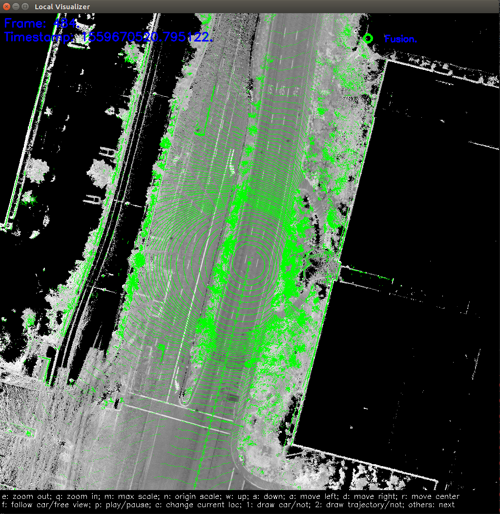

How to Run RTK Localization Module On Your Local Computer¶
1. Preparation¶
Download source code of Apollo from GitHub
Follow the tutorial to set up docker environment.
Download localization data from Apollo Data Open Platform（US only).
2. Build Apollo¶
First check and make sure you are in Apollo Development Docker container before you proceed. Now you will need to build from the source.
# (Optional) To make sure you start clean
bash apollo.sh clean
bash apollo.sh build_opt
3. Run the RTK localization module¶
cyber_launch start /apollo/modules/localization/launch/rtk_localization.launch
In /apollo/data/log directory, you can see the localization log files.
localization.INFO : INFO log
localization.WARNING : WARNING log
localization.ERROR : ERROR log
localization.out : Redirect standard output
localizaiton.flags : A backup of configuration file
5. Play cyber records¶
In the downloaded data, you can find a folder named apollo3.5. Let’s assume the path of this folder as DATA_PATH.
cd DATA_PATH/records
cyber_recorder play -f record.*
6. Record and Visualize localization result (optional)¶
Visualize Localization result¶
cyber_launch start /apollo/modules/localization/launch/msf_visualizer.launch
First, the visualization tool will generate a series of cache files from the localization map, which will be stored in the /apollo/cyber/data/map_visual directory.
Then it will receive the topics listed below and draw them on screen.
/apollo/sensor/lidar128/compensator/PointCloud2
/apollo/localization/pose
If everything is fine, you should see this on screen.
